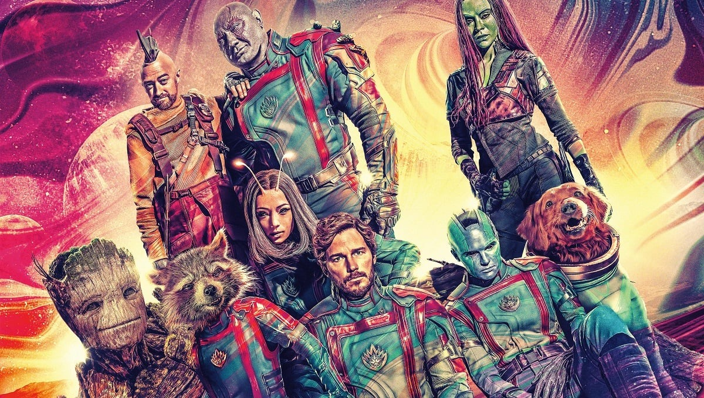

Resumo do Filme: Guardiões da Galáxia Vol. 3
Sinopse Oficial
Em Guardiões da Galáxia Vol. 3, o amado grupo de desajustados busca se estabelecer em Lugar Nenhum, mas não demora muito para que suas vidas sejam reviradas pelos ecos do passado turbulento de Rocket (Bradley Cooper). Ainda se recuperando da perda de Gamora (Zoe Saldana), após os acontecimentos de Vingadores: Guerra Infinita (2018), Peter Quill (Chris Pratt) reúne sua equipe para defender o universo e um companheiro de equipe. Mas esta missão pode significar o fim dos Guardiões como conhecemos, se ela não for bem-sucedida.
A história se aprofunda em dar um senso de final para cada personagem que até então apareceu no grupo. Apesar de fazer parte do MCU, o filme é completamente independente do universo gigantesco da Marvel e se revolve consigo mesmo seu desfecho. Apesar de muita gente colocar essa trilogia como a melhor, eu ainda acho que a trilogia do Capitão América é mais forte e mais influente, mas aqui, no volume 3, temos um final que vale a pena cada segundo.
É emocionante do começo ao fim, conseguiu misturar o humor, conteúdo sempre marcante nos filmes dos Guardiões, com drama. O filme foca em um dos personagens mais misteriosos da Marvel, afinal, de onde veio o Rocket? Preparem os lenços, com certeza fará você chorar, algumas horas por tristeza, outras por emoção.
Embora foque na história prequel do Rocket, o roteiro faz questão de dar importância para cada personagem. E de forma conclusiva, consegue deixar um gosto de fim de ciclo, mas com pequenas pontas que podem ser exploradas no futuro, afinal, que maluco seria um CEO da Marvel em deixar um produto tão rentável chegar ao fim?!
Um dos pontos que sempre me chamaram a atenção dos Guardiões foram por causa de pequenos detalhes que tinham ação e comédia juntos, recomendo assistirem este filme, porque ele passa uma mensagem muito legal sobre os animais, que com certeza tocará em um ponto muito sensível de cada um. Aliás, eu achei surpreendente esse tema passar pelo crivo da Marvel.
Algumas cenas são extremamente pesadas, e pensando no público principal que são crianças, a história mostra como os seres humanos podem ser cruéis para benefício próprio e não pensam nos animais.
Se o volume 1 foi sobre o Peter Quill e o segundo sobre “família”, o volume 3 é totalmente focado sobre destino e propósito. Cada personagem precisa enfrentar seus próprios dilemas e encerrar seus ciclos, mesmo que isso faça arriscar sua própria vida.
Existe um senso de emergência durante todo o filme, que apesar de longo (2h 29m) passa incrivelmente rápido deixando um gosto de quero mais. Sinceramente, passaria por mais umas horas com esses personagens tranquilamente.
O roteiro ao explorar seus dilemas os tornam incrivelmente humanos, mesmo que falando de uma história sobre super heróis em um universo fantasioso, todos eles possuem uma características que é do senso humano. Desde aceitação, paixões, paternidades e amor. Guardiões consegue unir todos esses sentimentos em uma história paralela de todo o universo da Marvel.
Talvez se me permitam um ponto negativo, foram os antagonistas, Will Poulter como Adam Warlock, parece que ficou sobrando o filme todo. Mal utilizado e com um final meio esperado e clichê, ele acaba não somando tanto ao filme, afinal, o foco da história não era ele. O que nos trouxe umas das cenas mais toscas do filme.
Por outro lado, o vilão central que é o Alto Evolucionário, interpretado pelo Chukwudi Iwuji que está excelente no filme. O ator já trabalhou com Gunn em O Pacificador, o que só corrobora com o fato de James Gunn colocar seus parças em todos os projetos, além da esposa.
Mas isso é o de menos. Alto Evolucionário completa a história de forma caricata e um pouco exagerada, mas dentro do universo da Marvel, caiu super bem. Mas ainda esperava um confronto melhor no final, ou até mesmo um plano um pouco mais bem elaborado.
Mas de longe o grande protagonista é o Rocket Raccoon, tanto pelo foco em sua história de origem, mas pelo fato dela completar a história dos próprios Guardiões, provando que, ao final das contas, o grande líder era o Rocket desde sempre. É o ponto mais emotivo do filme e ao final, a grande catarse.
A história dele é muito triste, não tem como você não chorar, você consegue sentir o que ele passou nas mãos do Alto Evolucionário, é sofrido e pesado a maneira como é contado a história dele.